리눅스마스터-1급 (2004-05-23 기출문제)
1과목: 리눅스 실무의 이해
1. 프로그램 및 프로세스와 관련된 설명으로 틀린 것은?
- 프로그램은 파일시스템에 저장된 실행 가능한 파일이다.
- 프로세스는 수행 중인 프로그램에서 하나의 인스턴스이다.
- 하나의 프로그램은 오직 하나의 프로세스만을 생성한다.
- 프로세스는 코드, 데이터 그리고 스택으로 구성 된다.
(정답률: 87%)

2. 리눅스 시스템의 프로세스와 관련된 설명으로 틀린 것은?
- 동시에 하나이상의 프로그램을 수행시킬 수 있는 멀티태스킹이 가능하다.
- 포그라운드 작업이란 화면에 보여 주면서 실행되는 상태를 말한다.
- 백그라운드 작업을 위해서는 명령의 실행 시 끝에 @을 붙인다.
- 프로그램이 백그라운드에서 실행되는 동안 다른 작업도 가능하다.
(정답률: 89%)
3. 리눅스에서 사용하는 명령어에 대한 설명으로 틀린 것은?
- 내부 명령어는 쉘에 내장되어 있는 명령어로 쉘이 명령어를 해석한다.
- 내부 명령어는 실행 시 새로운 서브 프로세스를 exec 하여 실행한다.
- 외부 명령어는 보통 /bin 디렉토리 안에 파일 형태로 존재한다.
- 외부 명령어는 실행 시 새로운 서브 프로세스를 fork 하여 실행한다.
(정답률: 7%)
4. ‘ls -al’ 명령의 실행으로 알 수 없는 정보는?
- 파일의 퍼미션
- 파일의 크기
- 파일의 소유자
- 파일의 i-node 값
(정답률: 71%)
5. 아래에서 설명하는 것은 무엇인가?
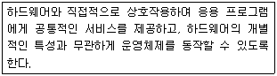
- kernel
- shell
- spooler
- compiler
(정답률: 82%)
6. 아래에서 설명하는 것은 무엇인가?
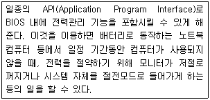
- PCMCIA
- APM
- ISA
- IDE
(정답률: 64%)
7. 리눅스의 파일 시스템에서 직접적인 디스크 액세스 빈도를 줄여 응답 시간을 줄이고 CPU의 효율을 높이기 위해서 사용되는 것은?
- directory
- buffer cache
- atomic operation
- bus
(정답률: 74%)
8. 리눅스 커널에 대한 설명으로 틀린 것은?
- 커널은 항상 메모리에 존재하며, 모든 프로세스가 사용할 수 있는 루틴들의 집합이다.
- 시스템 호출은 호출한 프로세스가 커널을 사용하기 위한 하나의 방법이다.
- 리눅스 커널은 모놀리틱(Monolithic) 커널이다.
- 커널은 다중 작업을 위해서 여러 개의 복사본으로 실행된다.
(정답률: 70%)
9. 리눅스에서 하드웨어, 커널, 유틸리티, 쉘 간의 레벨별 구조가 바르게 나열된 것은?
- 사용자 프로그램 - 쉘 - 커널 - 하드웨어
- 쉘 - 사용자 프로그램 - 커널 - 하드웨어
- 쉘 - 커널 - 사용자 프로그램 - 하드웨어
- 사용자 프로그램 - 커널 - 쉘 - 하드웨어
(정답률: 알수없음)
10. 다음은 X 윈도우와 관련된 설명이다. ( )안에 들어갈 알맞은 용어는?
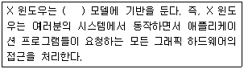
- 클라이언트/서버
- 그래픽/텍스트
- 데이터/함수
- 윈도우/비 윈도우
(정답률: 70%)
11. 쉘에 대한 설명으로 틀린 것은?(오류 신고가 접수된 문제입니다. 반드시 정답과 해설을 확인하시기 바랍니다.)
- ‘echo $SHELL’은 현재 사용 중인 쉘의 종류를 보여준다.
- 현재 사용 중인 쉘을 다른 쉘로 변경하는 명령어는 chsh이다.
- 쉘은 사용자가 지정한 명령들을 처리해주는 명령 해석기이다.
- 리눅스에서 가장 많이 사용하는 쉘은 Bash 이다.
(정답률: 20%)
12. 본 쉘(Bourne Shell)에서 사용하는 환경변수에 대한 설명으로 틀린 것은?
- PWD : 자동으로 설정된 것으로 사용자의 현재 위치를 나타낸다.
- HOME : 사용자가 시작하는 위치인 홈 디렉토리를 설정한다.
- PS1 : 쉘이 명령어를 찾는 디렉토리 목록을 표현한다.
- TERM : 터미널 데이터베이스에 의해 지정되는 대로 터미널 유형의 이름을 설정한다.
(정답률: 63%)
13. ps 명령어의 옵션에 대한 설명으로 틀린 것은?
- -a : 모든 프로세스를 출력한다.
- -x : 터미널에 종속되지 않은 프로세스들을 출력한다.
- -h : 프로세스 간 상속관계를 트리구조로 보여 준다.
- -u : 사용자의 이름과 프로세스가 시작된 시간 등을 출력한다.
(정답률: 64%)
14. fork 시스템 호출에 대한 설명으로 틀린 것은?
- 자신의 복사본인 새로운 자식 프로세스를 생성 한다.
- 프로세스가 지정된 새로운 프로그램을 실행 시키도록 한다.
- 새로 생성된 자식 프로세스와 부모 프로세스에게 동일한 값을 반환한다.
- 자신의 프로세스 아이디가 변경된다.
(정답률: 8%)
15. 프로세스간의 통신을 위해서 사용되는 방법은 무엇인가?
- 파이프(PIPE)
- 인터럽트(Interrupt)
- 스레드(Thread)
- 프로토콜(Protocol)
(정답률: 36%)
16. 다음은 무엇에 대한 설명인가?
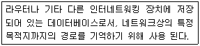
- Port Number
- Netmask
- Routing Table
- MAC Address
(정답률: 72%)
17. 메일서버에 저장되어 있는 자신의 메일을 클라이언트의 메일 박스로 가져올 때 사용하는 프로토콜은?
- POP3
- SMTP
- FTP
- PPP
(정답률: 65%)
18. 네트워크 인터페이스를 설정하는 형식으로 맞는 것은?
- route add default gw 132.167.132.1 dev eth0
- ifconfig eth0 104.134.27.45 -net 255.255.255.0 gw 104.134.27.45
- route eth0 down
- ifconfig eth0 210.134.27.45 netmask 255.255.255.0 broadcast 210.134.27.255 add
(정답률: 25%)
19. 리눅스 클라이언트에서 DNS 서버의 주소를 보관하고 있는 설정 파일은?
- /etc/resolv.conf
- /etc/hosts
- /etc/gateway
- /etc/domainname
(정답률: 65%)
20. 시스템의 보안을 강화하기 위한 목적 중 하나로 ping의 요청에 반응하지 않도록 설정하기 위해 사용하는 커널 옵션은?
- ip_forward
- secure_redirects
- accept_secure_route
- icmp_echo_ignore_all
(정답률: 58%)
2과목: 리눅스 시스템 관리
21. 다음 중 /etc/passwd 파일에서 확인할 수 있는 정보가 아닌 것은?
- 사용자 계정
- UID
- 로그인 쉘
- 소속그룹 명
(정답률: 50%)
22. 아래와 같이 사용자 추가 명령어를 실행하였을 때, /etc/passwd 파일에 새로 추가될 내용으로 가장 적절한 것은?
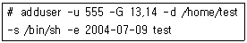
- test:x:555:555::/home/test:/bin/sh
- test:x:13:14::/bin/sh:/home/test
- test:x:555:13,14::/home/test:/2004/07/09
- test:x:13:14::/home/test:/bin/sh
(정답률: 25%)
23. 시스템 관리자가 이미 존재하고 있는 특정 사용자 계정의 소속 그룹을 변경시키기 위한 가장 적절한 명령어는?
- adduser
- usermod
- chgrp
- chage
(정답률: 44%)
24. 사용자를 추가하는데 필요한 파일과 가장 관련이 적은 것은?
- /etc/shadow
- /etc/passwd
- /etc/profile
- /etc/group
(정답률: 50%)
25. 아래의 실행결과를 가장 올바르게 설명한 것은?
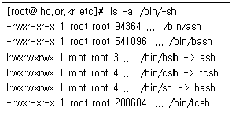
- 시스템이 제공하는 쉘의 목록을 확인해 보고 있다.
- 시스템의 기본 쉘은 ash 쉘임을 알 수 있다.
- 시스템 관리자는 위의 결과를 쉘의 목록을 담고 있는 /etc/shells 파일과 항상 동일하게 유지 시켜주어야 한다.
- /bin/sh, /bin/csh, /bin/bsh는 사용자가 사용할 수 없는 쉘이다.
(정답률: 42%)
26. 리눅스 시스템에서 사용자의 디스크 할당량을 제한하기 위한 프로그램은?
- fdisk
- quota
- mount
- disk druid
(정답률: 75%)
27. 다음 명령의 실행결과에 대한 설명으로 가장 적절한 것은?
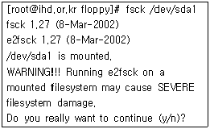
- 하드 디스크의 파일 시스템을 점검하려 하고 있다.
- 플로피 디스크의 파일 시스템을 점검하려 하고 있다.
- 하드 디스크를 포맷하려 하고있다.
- 플로피 디스크를 포맷하려 하고있다.
(정답률: 45%)
28. 아래 명령의 실행결과에 대한 설명으로 가장 적절한 것은?
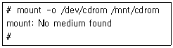
- mount 명령을 통하여 CDROM을 성공적으로 마운트 시켰다.
- 시스템에 CDROM 디스크가 삽입되어 있지 않아 마운트가 되지 않고 있다.
- 시스템에 /dev/cdrom 파일이나 /mnt/cdrom 파일이 존재하지 않아 마운트가 되지 않고 있다.
- mount 명령에 마운트 하고자 하는 대상의 파일 시스템 타입을 제대로 지정해 주지 않아 마운트에 실패하였다.
(정답률: 50%)
29. 다음 중 파일시스템 관리에 사용되는 명령이 아닌 것은?
- fdisk
- fstab
- mkfs
- fsck
(정답률: 23%)
30. ( ) 안에 알맞은 퍼미션(Permission)은?
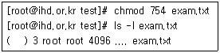
- -rwxrw-r--
- -rwxr--r-x
- -r--r-xrwx
- -rwxr-xr--
(정답률: 85%)
31. 아래 명령의 실행결과를 보고 이와 같은 상황에서 아파치의 설정을 바꾼 뒤, 새롭게 바뀌어진 설정을 적용시키고자 할 경우 사용할 명령어로 가장 적절한 것은?
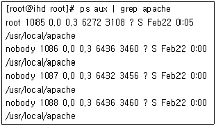
- killall -s 1 apache
- kill -s 1 1085
- killall -1 1085
- kill 1085
(정답률: 25%)
32. ps 명령으로 확인할 수 있는 프로세스 상태에 대한 설명으로 틀린 것은?
- R : 실행 중 또는 실행될 수 있는 상태
- Z : 좀비(Zombie) 프로세스
- D : 디스크관련 대기 상태
- T : 페이지관련 대기 상태
(정답률: 41%)
33. Runlevel 5의 실행 상태에 대한 설명으로 알맞은 것은?
- X 윈도우 환경으로 부팅한다.
- 시스템을 종료한다.
- 단일사용자 모드로 부팅한다.
- 네트워크 접속이 이뤄지지 않는 다중사용자 모드로 부팅한다.
(정답률: 47%)
34. nice 명령어의 특징에 대한 설명으로 틀린 것은?
- 스케쥴링 우선권을 변경하여 프로그램을 수행 한다.
- 아무런 인수도 없으면 상속받은 현재의 스케쥴링 우선권을 출력한다.
- 조정 수치가 생략되면 명령의 우선권은 1만큼 증가한다.
- 슈퍼 유저는 음의 조정 수치를 부여할 수 있다.
(정답률: 45%)
35. 다음 명령어의 실행결과를 가장 적절하게 설명한 것은?
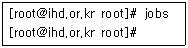
- 전체 시스템에 동작중인 프로세스가 하나도 존재하지 않는다.
- 전체 시스템에서 root가 실행시킨 총 프로세스가 하나도 존재하지 않는다.
- 현재 터미널에서 root가 백그라운드로 실행시킨 프로세스가 하나도 존재하지 않는다.
- 전체 시스템에 동작중인 프로세스 중 root 가 백그라운드로 수행시킨 프로세스는 하나도 존재하지 않는다.
(정답률: 34%)
36. 아래에서 설명하고 있는 명령어는?
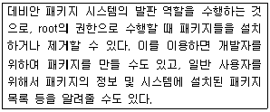
- rpm
- tar
- make
- dpkg
(정답률: 34%)
37. 다음 중 프로세스를 식별하기 위해 할당하는 고유한 번호를 나타내는 것은?
- UID
- GID
- PID
- PPID
(정답률: 87%)
38. 다음 명령의 실행결과에 대해 가장 적절하게 설명한 것은?
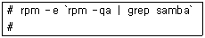
- 시스템에 설치된 패키지 중 samba 라는 이름의 패키지를 제거하였다.
- 시스템에 설치된 패키지 중 samba 라는 문자열을 포함한 모든 패키지를 제거하였다.
- 시스템에 설치된 패키지 중 samba 라는 문자열을 포함한 한 개의 패키지만을 제거하였다.
- 시스템에 samba 라는 이름의 패키지가 존재하는지 여부를 출력하고 있다.
(정답률: 42%)
39. 다음 중 rpm 패키지를 설치하기 위한 명령이 아닌 것은?(문제 오류로 실제 시험에서는 1, 3번이 정답 처리되었습니다. 여기서는 1번을 누르시면 정답 처리 됩니다.)
- rpm -V
- rpm -ivh
- dpkg -i
- rpm -Uvh
(정답률: 93%)
40. 아래와 같은 rpm 패키지의 성질을 무엇이라고 하는가?
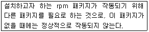
- 상호 운용성(Interoperability)
- 패키지 용량(Capacity)
- 관련성(Relativity)
- 의존성(Dependency)
(정답률: 50%)
41. 리눅스의 시리얼 포트를 통한 콘솔접속 시 할당 받을 수 있는 디스플레이 디바이스명으로 올바른 것은?
- pts/0
- ttyS1
- ptya0
- pt0
(정답률: 43%)
42. 리눅스 커널의 계속적인 업그레이드가 필요한 이유로 가장 적절하지 못한 것은?
- 새로운 하드웨어의 지원
- 시스템관리 능력과 방법의 개선
- 기존 커널 시스템의 버그수정
- 개발버전의 테스트
(정답률: 59%)
43. Secondary Master IDE Disk를 의미하는 것은?
- hda
- hdb
- hdc
- hdd
(정답률: 20%)
44. 부팅 시 커널이 인식한 디스크나 네트워크 디바이스와 같은 주변기기의 인식 여부를 알 수 있는 메시지를 확인하는 명령은?
- dmesg
- bootlog
- messages
- lastlog
(정답률: 53%)
45. 리눅스에서 소프트웨어 RAID를 커널 모듈을 이용 하지 않더라도 기본적으로 지원하도록 컴파일 하기 위해 make menuconfig 명령의 커널옵션 설정에서 활성화해야 하는 항목은?
- Block devices
- Multi Device support
- SCSI Support
- Input Core Support
(정답률: 39%)
46. 커널 컴파일 시 make menuconfig 명령의 옵션중 Networking options에서 조작할 수 있는 기능이 아닌 것은?
- 라우팅 관련 기능 통제
- 패킷 필터링 관련 기능 통제
- 소켓 필터링 관련 기능 통제
- 네트워크 디바이스 인식
(정답률: 42%)
47. 사용 중인 리눅스 시스템에 2개의 내장형 모뎀을 설치하여 PPP 서버를 구축하려 한다. 이때 내장형 모뎀의 디바이스명 조합으로 올바른 것은?
- 첫 번째 모뎀 : /dev/cua0
두 번째 모뎀 : /dev/cua1 - 첫 번째 모뎀 : /dev/cua0
두 번째 모뎀 : /dev/cua2 - 첫 번째 모뎀 : /dev/cua1
두 번째 모뎀 : /dev/cua2 - 첫 번째 모뎀 : /dev/cua1
두 번째 모뎀 : /dev/cua0
(정답률: 22%)
48. 파일 시스템에 대한 설명으로 틀린 것은?
- vfat : 리눅스의 기본 파일시스템이다.
- reiserfs : 저널링 파일시스템의 하나이다.
- hpfs : OS/2의 HPFS 파일 시스템이다.
- nfs : 네트워크 파일시스템이다.
(정답률: 42%)
49. X 윈도우의 그래픽 카드 설정을 위한 명령은?
- Xconfigurator
- XF86CONFIG
- xinit
- initvga
(정답률: 63%)
50. 보기의 커널 모듈 중 성격이 다른 것은?
- es1370.o
- maestro.o
- sb.o
- 3c509.o
(정답률: 34%)
51. 시스템의 전반적인 로그를 모두 포함하고 있으며, tty가 설정되어있지 않는 프로세스나 데몬이 출력하는 메시지를 저장하고 있는 로그 파일은?
- messages
- secure
- access_log
- xferlog
(정답률: 54%)
52. 시스템을 안전하게 운영하기 위한 보안정책으로 가장 적절하지 못한 것은?
- 사용자의 권한은 최소한의 권한을 유지하게 한다.
- 불필요한 서비스는 최대한 정지시킨다.
- 사용자 로그인의 보안성 향상을 위하여 rlogin을 이용하도록 정책을 설정한다.
- chroot 기능을 적극 활용한다.
(정답률: 25%)
53. messages 로그에서 아래와 같은 내용이 생성된 원인으로 알맞은 것은?
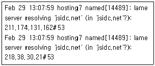
- named 서버가 218.38.30.21 서버로부터 공격을 당하고 있다.
- jsidc.net에 대한 정보를 갖고 있지 않은 상태 에서 1,2 차 name server로 등록되어 있다.
- jsidc.net 도메인에 대한 정보가 없어서 root dns에 문의하였음을 나타내는 로그이다.
- named 서버를 재 구동할 것을 요청하고 있다.
(정답률: 34%)
54. SSH 프로토콜의 장점이 아닌 것은?
- 스니핑의 위험으로부터 보호된다.
- 기존 원격접속에 비해 통신속도가 월등히 빠르다.
- Switch를 사용하지 않는 네트워크에서도 보안성이 높다.
- 패킷 스푸핑 공격에 대하여 비교적 안전하다.
(정답률: 32%)
55. 다음과 같은 내용의 로그 가 저장되 는 로그 파일은 ?
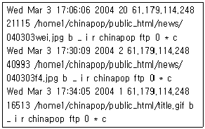
- messages
- xferlog
- maillog
- secure
(정답률: 31%)
56. pam library 설정에서 계정 사용자가 해당서비스 접근이 허용되었는지에 대한 여부와 패스워드 기간 만료 등을 결정하는 구성 토큰은?
- type
- auth
- account
- password
(정답률: 28%)
57. 시스템 보안 관련 패키지가 아닌 것은?
- cops
- dump
- tripwire
- sudo
(정답률: 27%)
58. syslogd에 대한 설명으로 틀린 것은?
- 원격 로깅 기능을 제공한다.
- tty가 지정되지 않은 프로세스나 데몬의 출력물에 대해서도 로깅을 지원한다.
- /etc/syslogd.conf 파일에 설정을 기록한다.
- /var/log/messages.1 파일에 로그를 기록한다.
(정답률: 50%)
59. 다음은 ‘ls -l’ 명령의 실행결과이다. 이 파일과 동일한 퍼미션을 갖고있는 파일을 모두 찾아내기 위한 명령으로 알맞은 것은?
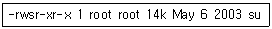
- find / perm +4000
- find / -perm 4000
- find / -perm +4000
- find / perm 4755
(정답률: 8%)
60. mount 명령으로 특정 디스크 장치를 마운트 할 때, 해당 장치 안의 실행파일을 실행시키지 못하게 하기 위한 옵션은?
- noexec
- nosuid
- noaccess
- noexcute
(정답률: 31%)
3과목: 네트워크 및 서비스의 활용
61. 아파치 설정 파일에서 아파치 서버의 기본 디렉토리를 지정하는 지시자는?
- ServerSignature
- ServerRoot
- ServerPath
- ServerName
(정답률: 57%)
62. /usr/sbin/httpd 명령의 옵션 중 아파치를 수행하지 않고 단지 환경 설정 파일의 올바름을 검사하고자 할 때 사용하는 것은?
- -h
- -k
- -t
- -x
(정답률: 32%)
63. configure를 사용하여 아파치 웹 서버의 설치 환경을 구성할 때, 설치할 디렉토리를 지정하는 옵션은?
- --prefix
- --enable-module
- --enable-shared
- --install-dir
(정답률: 36%)
64. 아파치의 동적공유객체(Dynamic Shared Object, DSO)에 대한 설명으로 틀린 것은?
- 새로 개발한 모듈을 수행 중인 아파치 서버에 반영할 수 있게 해준다.
- 아파치 서버가 mod_so 모듈과 함께 컴파일 되어야 사용이 가능하다.
- DSO를 사용하면 서버의 시작이 빨라진다.
- 아파치 환경 설정 파일에서 LoadModule 지시자로 지정하면 동적으로 적재시킬 수 있다.
(정답률: 20%)
65. 아파치 설정 파일의 HostnameLookups 지시자에 대한 설명으로 맞는 것은?
- 클라이언트의 호스트 이름에 대응하는 IP 주소를 구할 수 있다.
- 값을 on 으로 설정할 경우 DNS 서버와 통신을 통해 속도가 향상된다.
- Double 값으로 설정되면 forward lookup을 수행한 후, 그 결과로 reverse forward lookup을 수행한다.
- 로그에 접속자의 도메인주소를 남기려면 값을 on 으로 설정한다.
(정답률: 8%)
66. 아래와 같은 설정을 가지고 있는 www.foo.com 아파치 웹 서버에 대해 ‘http://www.foo.com/~bob/one/two.html’ 요청을 했을 때 실제로 접근되는 파일은?
- ~bob/public_html/one/two.html
- ~bob/www/one/two.html
- /home/www/one/two.html
- /home/bob/www/one/two.html
(정답률: 39%)
67. 아파치 웹 서버 www.ihd.org의 환경 설정 중 ‘http://www.ihd.org/service/foo.txt’ 주소에 대한 요청을 ‘http://foo2.bar.com/service/foo.txt’ 로 변경 하기 위한 설정으로 알맞은 것은?
- Redirect /service http://foo2.bar.com/service
- Redirect http://foo2.bar.com
- Redirect http://www.ihd.org http://foo2.bar.com
- Redirect http://foo2.bar.com/service
(정답률: 16%)
68. 다음은 아파치 설정 파일의 내용 중 일부이다. 이에 대한 설명으로 가장 적절하지 못한 것은?
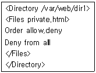
- /var/web/dir1/private.html 파일에 대한 접근을 허용하지 않는다.
- /var/web/dir1 디렉토리의 모든 서브 디렉토리에 있는 private.html 파일에 대한 접근을 허용하지 않는다.
- /var/web/dir1/private.html 파일에 대한 접근만 허용한다.
- /var/web/dir1/private.html 외의 모든 파일에 대한 접근을 허용한다.
(정답률: 47%)
69. 삼바 서버 데몬인 smbd에 대한 설명으로 가장 적절하지 못한 것은?
- smb는 server message block의 약어이다.
- TCP 포트 139번을 사용한다.
- 클라이언트 요청이 들어오면 새로운 자식 프로세스를 만들어 클라이언트의 요청을 담당하게 한다.
- 클라이언트 연결에 대한 인증이 이루어지면 루트의 권한으로 서비스하게 된다.
(정답률: 48%)
70. 삼바의 설정 파일인 smb.conf이 올바르게 작성 되었는지 검사하는데 쓰이는 프로그램은?
- smbclient
- testparm
- smbstatus
- smbtest
(정답률: 36%)
71. 삼바의 설정 파일인 smb.conf의 [homes] 섹션에 대한 설명으로 틀린 것은?
- 설정 파일에 없는 공유 디렉토리에 접근했을 때 보여주는 섹션이다.
- 사용자의 홈 디렉토리에 접근할 수 있게 해준다.
- 읽기만 가능하고 쓰기는 불가능하다.
- 사용자의 암호를 사용한 인증을 수행할 수 있다.
(정답률: 50%)
72. 다음은 삼바 설정 파일의 일부이다. 이에 대한 설명으로 적절하지 못한 것은?
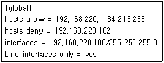
- 192.168.220 서브넷에 있는 모든 호스트로부터 접근을 허용한다.
- 134.213.233 서브넷에 있는 모든 호스트로부터 접근을 허용한다.
- 192.168.220.102 호스트로부터 접근을 허용하지 않는다.
- 192.168.220.100 네트워크 인터페이스에 대해 응답하지 않는다.
(정답률: 73%)
73. 삼바 서버의 인증 방법에 대한 설명으로 틀린것은?
- share : 어떠한 사용자라도 접근을 허용한다.
- user : 허가된 사용자와 패스워드를 통해 접근을 허용한다.
- server : 인증 처리를 다른 서버를 통해 처리 한다.
- domain : DNS 서버를 통해 인증을 처리한다.
(정답률: 19%)
74. 여러 사용자가 파일을 공유하는데 사용하는 서비스가 아닌 것은?
- Samba
- FTP
- Telnet
- NFS
(정답률: 62%)
75. NFS 서버의 설정 파일에서 클라이언트가 root 사용자로 마운트 할 수 있게 해주는 옵션은 무엇인가?
- squash_uids
- no_root_squash
- root_squash
- secure
(정답률: 30%)
76. 다음은 mount 명령어를 사용하여 NFS 파티션을 마운트하는 명령이다. 이 명령과 같은 기능을 하도록 /etc/fstab 파일에 명시해야 하는 내용으로 알맞은 것은?
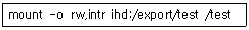
- ihd:/export/test /test nfs rw,intr 0 0
- /test ihd:/export/test nfs rw,intr 0 0
- ihd:/export/test /test rw,intr 0 0
- /test ihd:/export/test rw,intr 0 0
(정답률: 29%)
77. ProFTPd의 기능에 대한 설명으로 틀린 것은?
- standalone 형태일 때, 사용할 포트 번호를 설정할 수 있다.
- 디렉토리별로 허용 권한을 설정할 수 있다.
- 사용자의 최상위 디렉토리를 설정할 수 있다.
- inetd 형태일 때 접속 가능한 사용자 수를 설정할 수 있다.
(정답률: 7%)
78. 다음은 ProFTPd의 설정 파일 중 일부이다. 이에 대한 설명으로 틀린 것은?
- /etc/shells 파일에 정의되지 않은 Shell을 사용하는 유저에게 FTP 접속을 허락하거나 거절 하는 것에 대한 설정이다.
- 일반적으로 ProFTP는 on 상태를 기본값으로 설치된다.
- 설정값이 on 일 때는 사용자의 쉘이 /etc/shells 파일에 등록되어 있지 않으면 Login을 할 수 없다.
- Anonymous User로 접속하려면 값을 off로 설정 해야 한다.
(정답률: 19%)
79. MUA(Mail User Agent)에 대한 설명으로 틀린 것은?
- 사용자들이 메일을 볼 수 있도록 서버에 도착한 메일을 사용자의 PC로 전달해주는 역할을 한다.
- MUA의 종류로는 POP, IMAP, SENDMAIL, QMAIL 등이 있다.
- MUA에서 사용하는 주된 프로토콜은 POP이며, 기본사용포트는 110번이다.
- 메일서버에 설치되어 있는 MUA는 주로 사용자 메일클라이언트의 요청에 대해 서비스한다.
(정답률: 9%)
80. 다음 설명에 해당하는 센드메일 관련 명령어는?
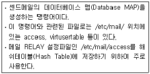
- build
- sendmail -bi
- m4
- makemap
(정답률: 46%)
81. 센드메일의 newaliases 명령어에 대한 설명으로 틀린 것은?
- Mail Alias 파일에 대한 데이터베이스를 재생성하는 명령어이다.
- newaliases 명령어가 참조하는 파일은 /etc/aliases 이다.
- newaliases 대신 'sendmail -bi' 명령을 사용할 수도 있다.
- 이 명령의 실행 결과로 생성되는 파일은 /etc/mail/virtusertable.db 이다.
(정답률: 20%)
82. 다음 명령은 센드메일 데몬을 실행한 것이다. 이에 대한 설명으로 알맞은 것은?
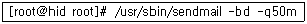
- sendmail을 포그라운드로 실행하고 메일큐를 50분 간격으로 처리한다.
- sendmail을 백그라운드로 실행하고 메일큐를 50분 간격으로 처리한다.
- sendmail을 포그라운드로 실행하고 메일큐를 50초 간격으로 처리한다.
- sendmail을 백그라운드로 실행하고 메일큐를 50초 간격으로 처리한다.
(정답률: 62%)
83. 다음 보기는 sendmail.cf 파일의 설정내용 중 일부이다. 이에 대한 설명으로 가장 적절한 것은?
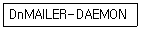
- 메일발신지를 설정한 것으로 수신측에서 받게 될 발신지는 MAILER-DAEMON이 된다.
- 센드메일을 MAILER-DAEMON 이라는 사용자 계정으로 실행한다.
- 에러메시지를 보낼 때 사용하는 사용자 이름을 정의하는 항목으로 메일이 정상적으로 전송되지 않고 리턴 되는 경우 MAILER-DAEMON 이라는 사용자로부터 에러메일을 받게 된다.
- Mail Relay 규칙을 설정해둔 파일로서 센드메일은 MAILER-DAEMON 이라는 파일의 규칙에 따라서 Mail Relay를 하게된다.
(정답률: 22%)
84. 작성한 메시지와 파일을 암호화 하고 특정인만 해독할 수 있도록 하는 전자우편관련 보안 기법은?
- ssh
- pam
- pgp
- sudo
(정답률: 10%)
85. DNS 존(Zone) 파일에서 메일 라우팅 경로를 지시하는 레코드(Record)는 어느 것인가?
- NS
- A
- CNAME
- MX
(정답률: 60%)
86. POP3와 IMAP에 대한 설명으로 틀린 것은?
- POP3은 ‘Post Office Protocol version 3’의 약어이고, IMAP은 ‘Internet Message Access Protocol’의 약어이다.
- 사용자가 메일을 받을 때, POP3은 제목만을 전달한 후에 필요해진 시점에 본문을 전달하는 반면, IMAP은 본문의 내용을 포함한 모든 메시지를 전송한다.
- POP3와 IMAP은 모두 메일클라이언트에게 메일을 전송하는 역할을 한다.
- POP3가 사용하는 기본포트는 110번이며, IMAP이 사용하는 기본포트는 143번이다.
(정답률: 30%)
87. 센드메일의 Relay 설정파일인 /etc/mail/access의 메일 거부패턴 설정옵션에 대한 설명으로 틀린 것은?
- 501 : 지정한 메일주소와 일치하는 메일 수신을 거부한다.
- 503 : 지정된 도메인으로부터 받은 메일은 모두 폐기한다.
- 553 : 발신 메일주소에 호스트명이 없을 경우 메일을 받지 않는다.
- 550 : 지정된 도메인과 관련된 모든 메일의 수신을 거부한다.
(정답률: 15%)
88. NFS의 기본적인 개념에 대한 설명으로 틀린 것은?
- 썬 마이크로시스템즈사에서 개발하였다.
- NFS는 주로 리눅스시스템과 윈도우시스템의 파일시스템 및 프린터 공유를 위해 사용된다.
- NFS는 RPC(Remote Procedure Call)를 기반으로 하기 때문에 portmapper가 실행되어 있어야 한다.
- NFS를 이용하면 네트워크로 연결이 가능한 서버들의 파일시스템을 동일한 시스템에 있는 파일시스템처럼 구성할 수 있다.
(정답률: 42%)
89. 다음은 인터넷 수퍼데몬(Xinetd)의 설정파일인 /etc/xinetd.conf 파일의 내용이다. 이에 대한 설명으로 틀린 것은?
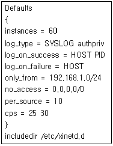
- 이 파일의 설정내용은 /etc/xinetd.d/ 디렉토리에 존재하는 모든 xinetd 서비스 파일들에 공통적으로 적용되는 것이다.
- ‘instance’는 동시에 서비스 가능한 서버의 최대 개수를 지정한 것이다.
- ‘per_source’는 동일한 호스트에서 접속을 허용할 최대접속 수를 제한하는 설정이다.
- ‘only_from’은 서비스를 허용하지 않을 호스트를 지정하는 설정이다.
(정답률: 45%)
90. 리눅스에서 사용되는 프락시(Proxy) 서버인 Squid에 대한 설명으로 틀린 것은?
- Proxy란 ‘대리인’ 또는 ‘대행자’ 라는 의미로서, 프락시 서버는 내부사용자가 사용했던 데이터를 일정 공간에 캐시(Cache)해 두었다가 필요시에 저장한 데이터를 재사용 한다.
- 프락시 서버는 클라이언트에게 동적IP 주소를 할당해 줌으로서 인터넷에 접속할 수 있게 해준다.
- 프락시 서버는 데이터캐시(Data Cache)를 이용하여 내부사용자의 네트워크 속도를 증가시키며, 내부망의 보안을 주된 목적으로 사용한다.
- 리눅스에서 프락시 서버로 사용할 수 있는 Squid는 3128번을 기본포트로 사용하지만 다른 포트를 지정하여 사용할 수도 있다.
(정답률: 43%)
91. DHCP 서버에 대한 일반적인 설명으로 틀린 것은?
- DHCP는 RPC(Remote Procedure Call)을 기반으로 제공되는 서비스이다.
- DHCP란 ‘Dynamic Host Configuration Protocol’의 약어로서 동적인 IP 할당을 위해 사용되는 프로토콜을 의미한다.
- DHCP 서버란 DHCP 클라이언트에게 IP 주소를 할당하여 네트워크의 사용을 가능하게 하는 서버를 의미한다.
- DHCP 서버가 DHCP 클라이언트에게 할당하는 IP 주소는 공인 IP 주소나 사설 IP 주소 모두 가능하다.
(정답률: 31%)
92. NFS 서비스에 필요한 데몬들과 NFS 서비스 관련 파일들에 대한 설명으로 틀린 것은?
- rpc.nfsd : NFS로 연결된 파일시스템의 공유를 가능하게 하는 NFS 주 데몬이다.
- rpc.mountd : RPC 기반에서 NFS 서버와 클라이언트간의 마운트를 가능하게 하는 데몬이다.
- portmap : RPC 기반에서 ypserv 데몬을 실행 시켜주는 데몬이다.
- /etc/exports : NFS 서버에 설정되는 파일로서 마운트를 허용할 NFS 클라이언트들과 마운트 옵션을 설정하는 파일이다.
(정답률: 40%)
93. NIS 도메인의 개념에 대한 설명으로 틀린 것은?
- NIS 도메인은 인터넷 도메인명과 함께 동일한 개념으로 사용할 수 있다.
- NIS 도메인이란 NIS 데이터베이스(NIS 맵) 정보를 함께 공유하고 사용하는 호스트들의 그룹이름 이라고 할 수 있다.
- NIS 마스터서버와 NIS 슬레이브서버, 그리고 NIS 클라이언트는 모두 동일한 NIS 도메인을 가져야 한다.
- nisdomainname 명령어로 NIS 도메인을 설정하거나 확인할 수 있다.
(정답률: 12%)
94. NIS 서비스 데몬들에 대한 설명으로 틀린 것은?
- ypserv : NIS 마스터서버와 NIS 슬레이브 서버 모두에서 실행되어야 하는 NIS 서비스의 주된 데몬이다.
- ypbind : NIS 서버와 NIS 클라이언트 사이의 바인딩(Binding)을 담당하는 데몬으로서 NIS 서버와 NIS 클라이언트 모두에서 실행 되어야 한다.
- ypmatch: NIS 마스터서버와 NIS 슬레이브 서버 사이에 NIS 맵의 전송을 담당하는 데몬이다.
- yppasswdd : yppasswd 명령어의 요청으로 NIS 패스워드를 변경해주는 데몬이다.
(정답률: 19%)
95. 방화벽(Firewall)의 기능에 대한 설명으로 틀린 것은?
- 정해진 액세스 규칙에 의해 패킷 통과여부를 결정하는 패킷 필터링 기능을 한다.
- Telnet과 FTP 클라이언트 요구에 의한 접속 대행 역할을 하는 응용계층에서의 프락시기능을 한다.
- 내부사용자의 인터넷 속도를 증가시키기 위하여 데이터 캐싱(Caching)기능을 한다.
- 부가적인 기능으로 가상사설망(VPN) 기능과 네트워크주소 변환(NAT), 그리고 네트워크 관리시스템(NMS)의 기능도 구현할 수 있다.
(정답률: 48%)
96. 다음은 ihd.or.kr 도메인에 대한 네임서버의 주 설정파일인 /etc/named.conf의 내용이다. 여기에서 로컬 도메인에 대한 역변환을 정의한 파일은 무엇인가?
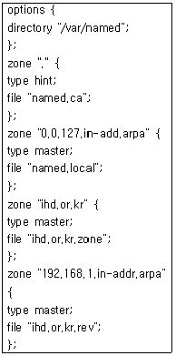
- named.ca
- named.local
- ihd.or.kr.zone
- ihd.or.kr.rev
(정답률: 10%)
97. VPN(가상사설망 : Virtual Private Network)에 대한 설명으로 틀린 것은?
- 인터넷망과 같은 공중망을 마치 전용선으로 사설망을 구축한 것처럼 사용하는 방식이다.
- 부족한 공인 IP 주소로 많은 사람들이 인터넷을 사용할 수 있도록 하는 IP 주소 동적 할당을 기본적으로 서비스하고 있다.
- 공중망을 이용하기 때문에 사용자가 늘어나거나 사용자가 장소를 옮기더라도 유연하게 통신망을 사용할 수 있으며, 본사와 각 지역 지사와의 자료공유가 용이하다.
- 공중망을 이용하기 때문에 전용선보다는 보안 문제해결이 필수적이다.
(정답률: 50%)
98. ‘tcpdump’ 명령어에 대한 설명으로 틀린 것은?
- 패킷분석 및 패킷필터링을 통하여 허용되지 않은 네트워크 침입자를 사전에 차단할 수 있다.
- 이 도구를 사용하기 위해서는 패킷 캡처 ‘libpcap’ 라이브러리가 설치되어있어야 한다.
- 네트워크 트래픽 및 패킷로그를 모니터링하는 도구이다.
- ‘tcpdump -i eth0 -w TCPDUMP’ 명령은 eth0 네트워크 인터페이스의 패킷을 TCPDUMP 라는 파일에 저장한다.
(정답률: 17%)
99. 파일무결성을 점검하는 프로그램인 TRIPWIRE에 대한 설명으로 틀린 것은?
- 파일무결성을 점검하여 변경 또는 변조된 파일을 조사하기 위한 보안 점검 도구이다.
- 정상적으로 실행되기 위해서는 사이트키(Site Key)와 로컬키(Local Key)그리고 설정파일과 정책파일이 모두 생성되어 있어야한다.
- 정책파일에는 무결성 검사대상 파일리스트가 저장되어 있다.
- 이상이 발견된 파일을 자동으로 복구하여 정상화시킨다.
(정답률: 45%)
100. 아래에서 설명하고 있는 것은 무엇인가?
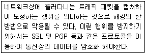
- 스니핑
- IP매스커레이딩
- 버퍼오버플로
- 루트킷
(정답률: 54%)